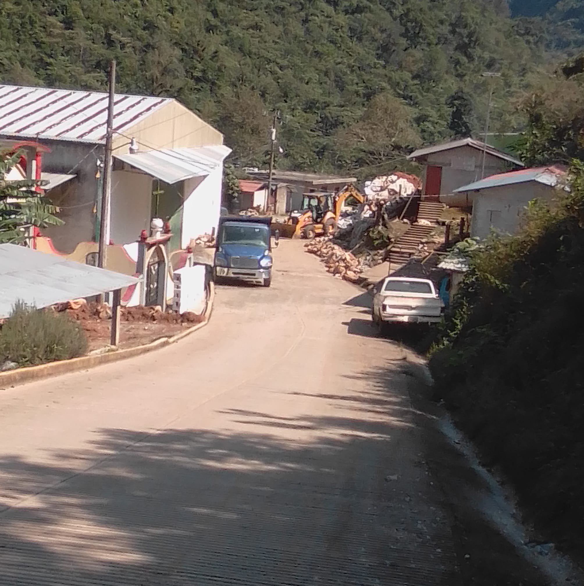
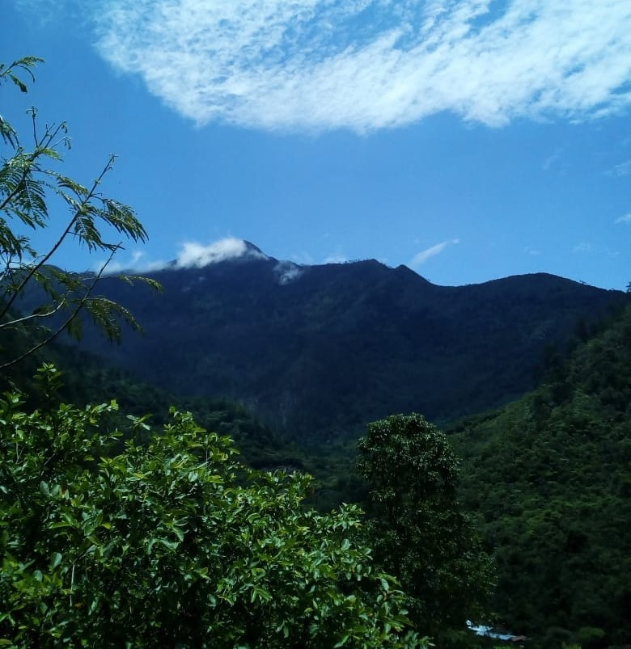
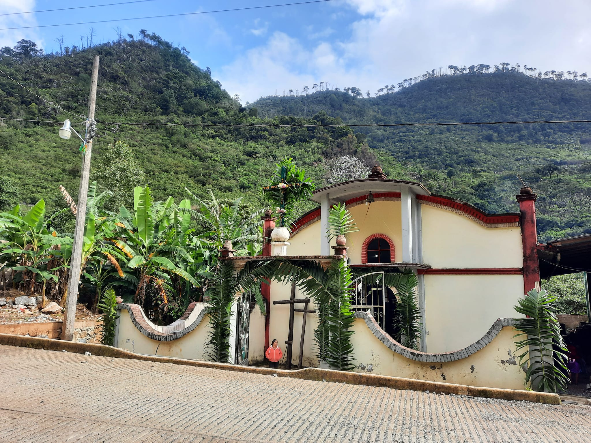
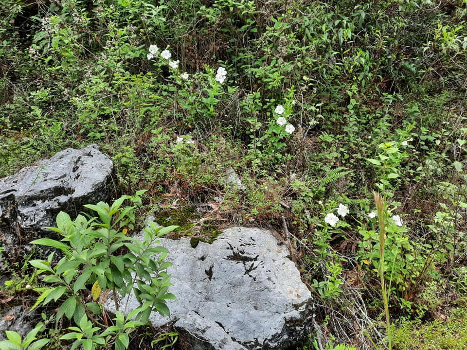
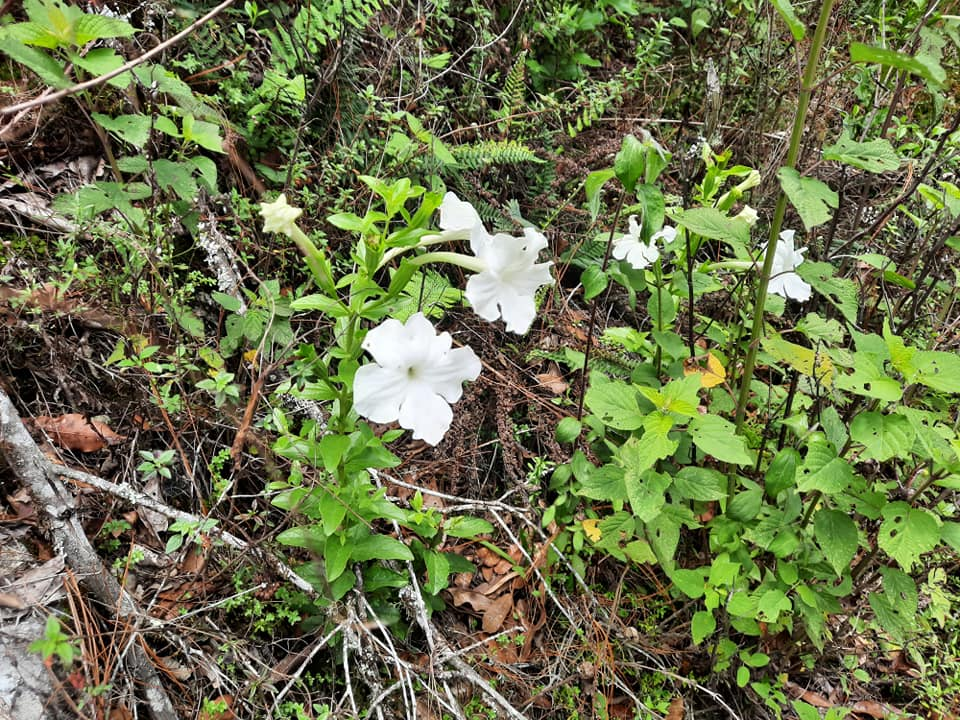
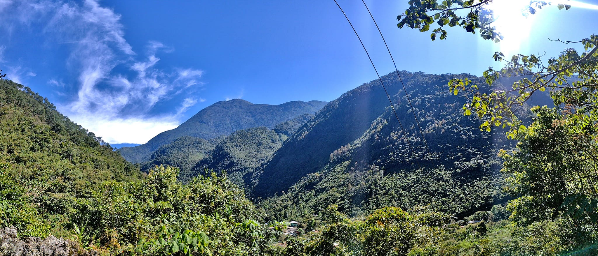
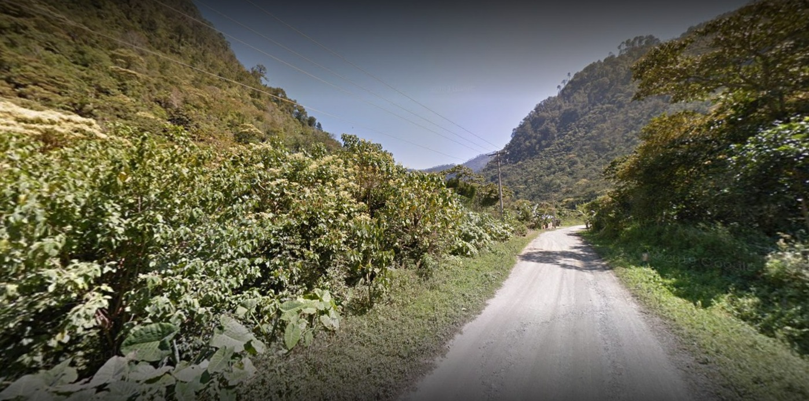
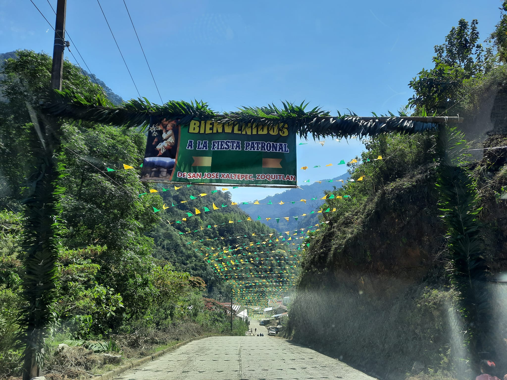
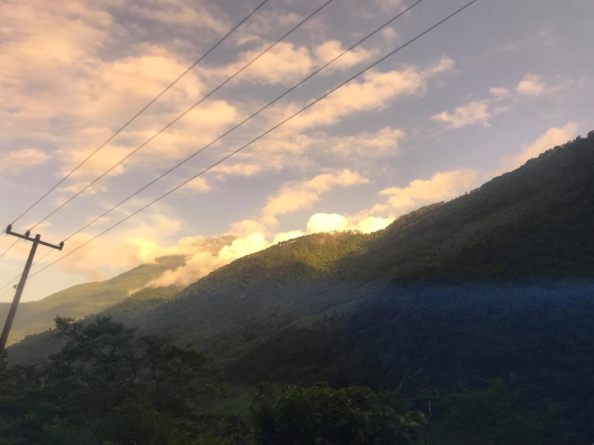
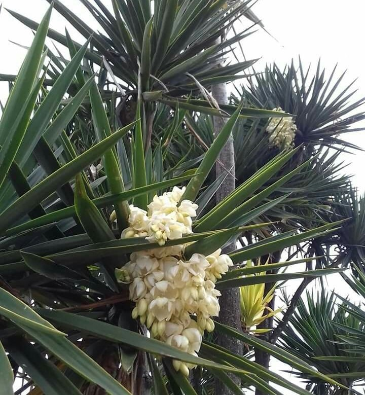

Conoce su Historia

1Historia
"Xalli": En el idioma náhuatl, significa "arena" o "terreno arenoso". Este término sugiere la presencia de suelos arenosos en la zona, que pueden haber sido distintivos en el entorno natural de Xaltepec.
"Tepetl": Significa "cerro" o "montaña". Al combinarlo con "xalli", el nombre completo "Xaltepec" nos evoca la imagen de un cerro o montaña caracterizada por la presencia de terreno arenoso.
Nos habla de una comunidad ubicada en un terreno arenoso en las laderas de un cerro o montaña. Estas características geográficas pueden haber influido en diversos aspectos de la vida de la comunidad, desde la agricultura y el uso de la tierra hasta las actividades cotidianas.
Galeria







Atractivos Turisticos:

Disfruta la celebración más importante de Xaltepec, donde la comunidad se reúne para honrar a su santo patrono, San José.

Explora los senderos de Xaltepec y déjate maravillar por la impresionante vista panorámica que se despliega ante tus ojos. Descubre paisajes cautivadores y la majestuosidad de la naturaleza en cada paso.
